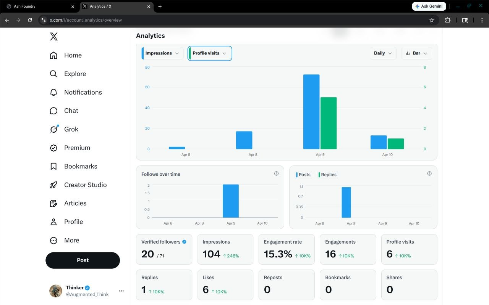

Archive
Expand archive
Original X Profile State
A tucked-away reference to the dormant Augmented Thinker profile before the current active posting loop began.
X / Social Presence
A snapshot of the analytics from the Thinker X profile following the reactivation of the account and the beginning of the daily-posting human-AI collaboration experiment.
A tucked-away reference to the dormant Augmented Thinker profile before the current active posting loop began.
This archive preserves the earlier record of the Thinker X profile before the current active workflow and posting cadence took shape.

A structured breakdown of the engagement and reach metrics captured from the analytics dashboard.
| Metric | Value |
|---|---|
| Likes | 6 |
| Replies | 1 |
| Reposts | 0 |
| Bookmarks | 0 |
| Shares | 0 |
| Followers | 71 (20 verified) |
| Date | Activity |
|---|---|
| Apr 6 | Minimal (~2 impressions) |
| Apr 8 | Initial post push (~18 impressions) |
| Apr 9 | Peak reach (~70 impressions, ~50 profile visits) |
| Apr 10 | Trailing engagement (~13 impressions, ~10 profile visits) |